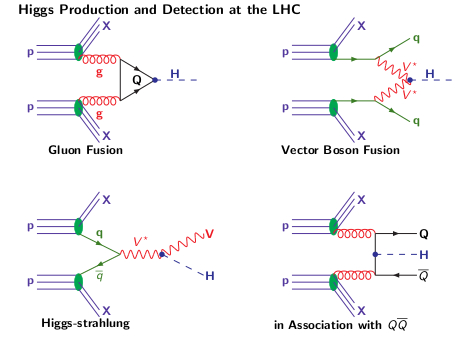
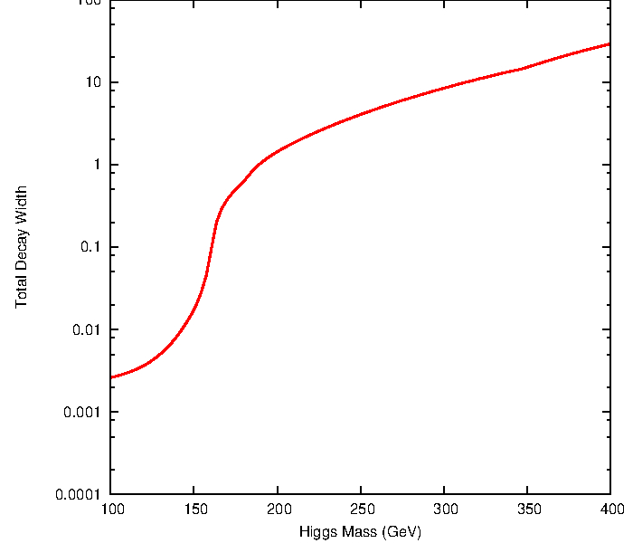
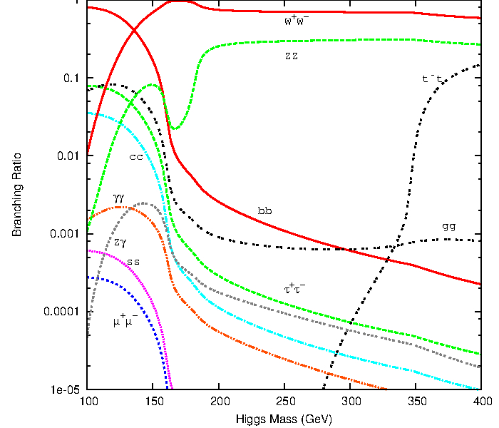
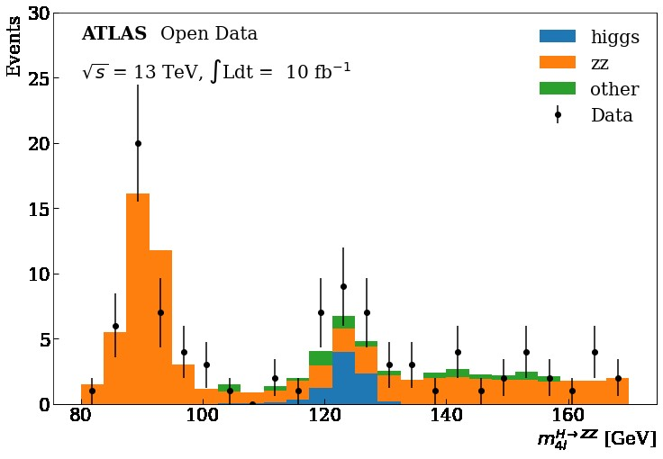
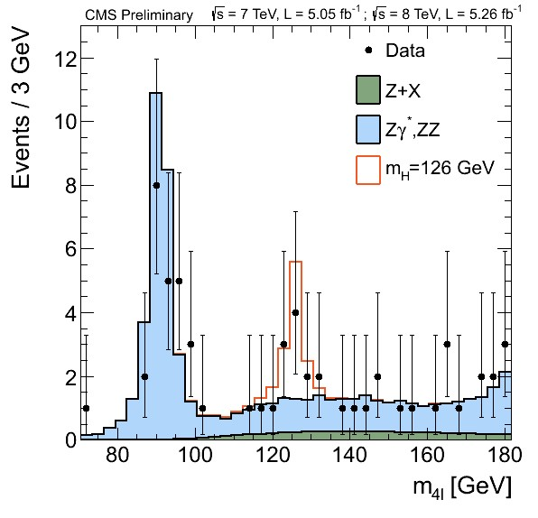
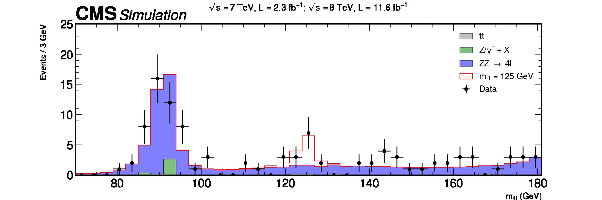

Physics Background
Contents
Physics Background#
You can take a look at the mathematical structure of the Standard Model of Particle Physics in the next section, or go directly to the main Higgs production mechanisms at hadron colliders.
{: .solution}
{: .callout}
The Standard Model of Particle Physics#
The Standard Model Lagrangian#
The SM is a quantum field theory that is based on the gauge symmetry $\(SU(3)_{C}\times SU(2)_{L}\times U(1)_{Y}\)\(. This gauge group includes the symmetry group of the strong interactions, \)\(SU(3)_{C}\)\(, and the symmetry group of the electroweak (EW) interactions, \)\(SU(2)_{L}\times U(1)_{Y}\)$.
The strong interaction part, quantum chromodynamics (QCD) is an SU(3) gauge theory described by the lagrangian density
\Phi = \begin{pmatrix} \phi^{+}\ \phi^{0} \end{pmatrix}, Y_{\Phi}=+1 $$,
in the scalar lagrangian
Fermion Masses#
We can use the same scalar field $\(\Phi\)\( to generate the fermion masses, with \)\(Y=+1\)\(, and the isodoublet \)\(\tilde\Phi=i\tau_{2}\Phi^{\star}\)\(, with \)\(Y=-1\)\(. For any fermion generation, we introduce the \)\(SU(2)_{L}\times U(1)_{Y}\)$ invariant Yukawa lagrangian
{\cal{L}}{Yuk}=-\frac{1}{\sqrt{2}} \begin{pmatrix} \overline{\nu}{e} & \overline{e}{L} \end{pmatrix} \begin{pmatrix} 0\ \upsilon+H \end{pmatrix}e{R}+… =-\frac{1}{\sqrt{2}}\lambda_{e}(\upsilon+H)\overline{e}{L}e{R}+… $$.
The constant term in front of $\(\overline{f}_{L}f_{R}\)$ (and h.c.) is identified with the fermion mass
V(\Phi)={\mu^{2}}\Phi^{\dagger}\Phi+{\lambda}(\Phi^{\dagger}\Phi)^{2}$\( \)\(=\frac{\mu^{2}}{2} \begin{pmatrix} 0 & \upsilon+H \end{pmatrix} \begin{pmatrix} 0\\ \upsilon+H \end{pmatrix} +\frac{\lambda}{4}\bigg{|} \begin{pmatrix} 0 & \upsilon+H \end{pmatrix}\)\( \)\(\begin{pmatrix} 0\\ \upsilon+H \end{pmatrix} \bigg{|}^{2} \)$.
Using the relation $\(\upsilon^{2}=-\mu^{2}/\lambda\)$, we get
{\cal{L}}{H}=\frac{1}{2}(\partial{\mu}{H})(\partial^{\mu}{H})-V$$,
m_{H}^{2}=2\lambda{\upsilon^{2}}=-2\mu^{2} $$,
and the Feynman rules for the Higgs self-interaction vertices are given by
{\cal{L}}{M{V}}\sim M_{V}^{2}\bigg{(}1+\frac{H}{\upsilon}\bigg{)}^{2}$$,
g_{Hff}=i\frac{m_{f}}{\upsilon}, g_{HVV}=-2i\frac{M_{V}^{2}}{\upsilon}, g_{HHVV}=-2i\frac{M_{V}^{2}}{\upsilon^{2}} $$.
{D_{\mu}=\partial_{\mu}-ig_{s}T_{a}G_{\mu}^{a}-ig_{2}T_{a}W^{a}{\mu}-ig{1}\frac{Y_{q}}{2}B_{\mu}} $$,
and
\[V(\Phi^{\dagger}\Phi)={\mu^{2}}\Phi^{\dagger}\Phi+{\lambda}(\Phi^{\dagger}\Phi)^{2}$$. >> >>For $$\mu^{2}<0$$, the neutral component of $$\Phi$$ will develop a vev >> >> \]< \Phi >_{0}\equiv <0|\Phi|0>=$\( \)\(\begin{pmatrix} 0\\ \frac{\upsilon}{\sqrt{2}} \end{pmatrix} \)$,
with $\(\upsilon=\bigg{(}-\frac{\mu^{2}}{\lambda}\bigg{)}^{1/2}\)$.
Writing the field $\(\Phi\)\( in terms of four fields \)\(\phi_{1,2,3}(x)\)\( and \)\(H(x)\)$ at first order and expanding it around the minimum
\[ >> \Phi =\]\[\begin{split}\begin{pmatrix} >> \phi^{+}\\ >> \phi^{0} >> \end{pmatrix} >> =\end{split}\]\[\begin{split}\begin{pmatrix} >> \phi_{2}+i\phi_{1}\\ >> \frac{1}{2}({\upsilon}+{H})-i\phi_{3} >> \end{pmatrix} =\end{split}\]\[\begin{split}exp\bigg{[}\frac{i\phi_{a}(x)\tau^{a}(x)}{\upsilon}\bigg{]} >> \begin{pmatrix} >> 0\\ >> \frac{1}{2}(\upsilon+{H(x)}) >> \end{pmatrix} >> $$. >> >> We can rotate away the fields $$\phi_{a}(x)$$ by an $$SU(2)_{L}$$ gauge transformation >> >> \end{split}\]\Phi(x)\rightarrow\Phi’(x)=U(x)\Phi(x)=\frac{1}{\sqrt{2}}$\( \)\(\begin{pmatrix} 0\\ {\upsilon} +{H(x)} \end{pmatrix} \)$,
where
\[ >> U(x)=exp\bigg{[}-i\phi_{a}\tau^{a}(x)\bigg{]} >> $$. >> >> This gauge choice, called unitary gauge, is equivalent to absorbing the Goldstone modes $$\phi_{a}(x)$$. >> >> Then we can fully expand the term $$(D_{\mu}\Phi)^{2}$$ of the lagrangian $${\cal{L}}_{Scalar}$$: >> >> \]|D_{\mu}\Phi|^{2}=\frac{1}{2}(\partial_{\mu}H)^{2}+\frac{1}{8}g_{2}^{2}(\upsilon+H)^{2}|W_{\mu}^{1}+iW_{\mu}^{2}|^{2}+\frac{1}{8}(\upsilon+H)^{2}|g_{2}W_{\mu}^{3}-g_{1}B_{\mu}|^{2} $$.
We now define the new fields $\(W_{\mu}^{\pm}\)\( and \)\(Z_{\mu}\)\( (\)\(A_{\mu}\)\( is the field orthogonal to \)\(Z_{\mu}\)$):
\[W^{\pm}=\frac{1}{\sqrt{2}}(W_{\mu}^{1}\mp iW_{\mu}^{2}),Z_{\mu}=\frac{g_{2}W_{\mu}^{3}-g_{1}B_{\mu}}{\sqrt{g_{2}^{2}+g_{1}^{2}}},A_{\mu}=\frac{g_{2}W_{\mu}^{3}+g_{1}B_{\mu}}{\sqrt{g_{2}^{2}+g_{1}^{2}}}$$. >> >> We can pick up the terms which are bilinear in the fields $$W^{\pm}$$, $$Z$$, $$A$$: >> >> $$M_{W}^{2}{W_{\mu}^{+}W^{-\mu}}+\frac{1}{2}M_{Z}^{2}{Z_{\mu}Z^{\mu}}+\frac{1}{2}M_{A}^{2}{A_{\mu}A^{\mu}}$$. >> >> The $$W$$ and $$Z$$ bosons have acquired masses, while the photon remains massless >> >> \]M_{W}=\frac{1}{2}\upsilon g_{2}, M_{Z}=\frac{1}{2}\upsilon\sqrt{g_{2}^{2}+g_{1}^{2}}, M_{A}=0 $$.
Higgs Production Mechanisms at Hadron Colliders#
The four main Higgs production mechanisms at a hadron collider are
{:width=”40%”}
The Higgs boson can decay into fermions and bosons, the total decay width and the branching ratios in function of the Higgs mass are shown below
{:width=”50%”} {:width=”50%”}
Higgs boson decay into four leptons#
We are going to focus on the data obtained at the ATLAS and CMS detectors at the LHC for the Vector Boson Fusion production mechanism and its subsequent decay into four leptons in order to get this plot using Matplotlib
{:width=”40%”} {:width=”40%”} {:width=”80%”}
{% include links.md %}